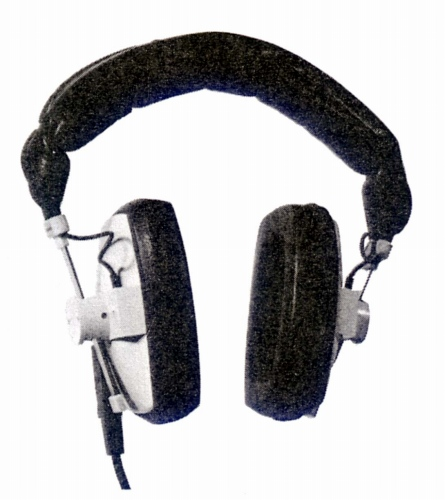
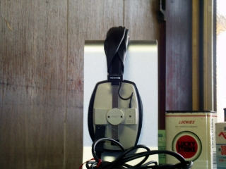
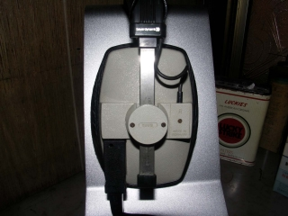
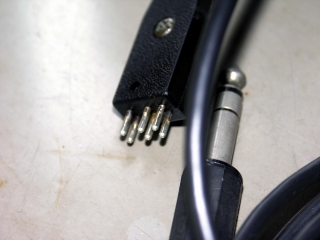
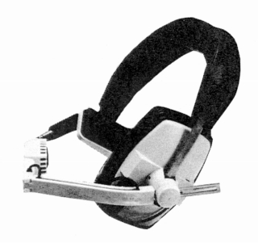

DT-100

■価格 14,000円
■型式 ダイナミック型
■振動板
■インピーダンス
8Ω
■再生周波数帯域 30-18,000Hz
■許容入力 1,000mW
■感度
■コード 1.5m
■重量 290g
■発売 1976年頃
■販売終了1978年頃
ただし、インピーダンス違い（16Ω及び250Ω）のモデルが現時点（2017/12月）でも入手可能
「レコーディング＆PA機器」によれば松田通商時代にも250Ωバージョンが売られていたようだ。
その際のスペックは
■価格
29,800円(「レコーディング＆PA機器93」)
34,000円(「レコーディング＆PA機器2000-2001」)
■インピーダンス
400Ω
■再生周波数帯域 30-20,000Hz
■許容入力 1,000mW
■重量
350g
■備考 報映産業が代理店をしていた頃のモデル
長瀬産業時代のモデルとヘッドバンドの形状が違う。
また長瀬産業時代のモデルでは不明だが、このタイプではケーブルは右出し、
右側のカプセルに現在のDT-250と同様のコネクターが確認できる。
価格は1976年頃のもの 1977年以降は15,500円

管理人所有機 イヤパッドは非純正

右出しケーブル、コネクター方式

6ピン式コネクター しかしうち2ピンはマイク等用である

バリエーションモデルの片耳モニター・マイク付きのDT-108